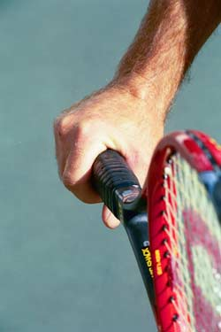
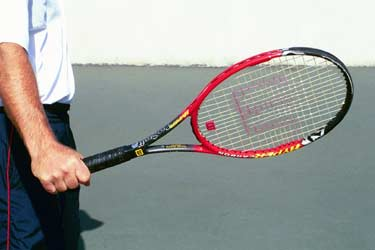
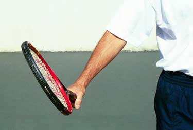
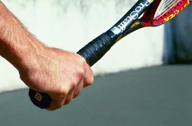
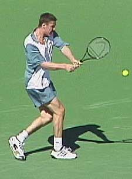
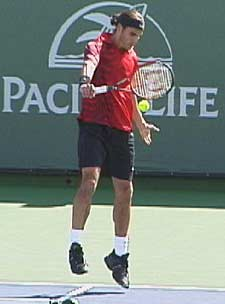
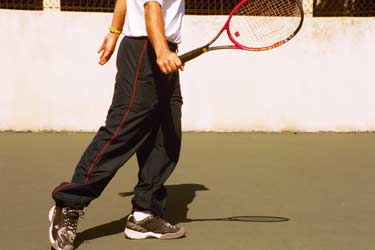

← Bài trước: Two Hand Backhand Swing Volley | 🏠 Classic Lessons Trang chủ | Bài tiếp: → Understanding The Continental Grip
Bài giảng riêng: Hiểu về các kiểu nắm vợt trái tay
Thư viện kiến thức quần vợt thống nhất — Cơ bản, Phân tích kỹ thuật, Thư viện tham khảo và nhiều hơn nữa
Bài giảng riêng: Hiểu về các kiểu nắm vợt trái tay
Bởi Kerry Mitchell
Những tay vợt hiện đại chơi một tay như Roger Federer có sức mạnh nổ lực tương đương với những tay vợt chơi hai tay hàng đầu.
So với cú thuận tay, có thể đánh với 4 hoặc 5 kiểu nắm vợt khác nhau, các kiểu nắm vợt trái tay thì đơn giản hơn nhiều. Đối với cú trái tay một tay, chỉ có hai lựa chọn: kiểu nắm châu Âu (xem phần 1 của loạt bài này) hoặc kiểu nắm phương Đông.
Trên cú trái tay hai tay, kiểu nắm vợt cho tay chủ đạo (tay dưới, ví dụ như tay phải cho người chơi tay phải) nên là kiểu châu Âu. Kiểu này có thể kết hợp với kiểu nắm phương Đông hoặc kiểu nắm bán phương Tây nhẹ nhàng với tay không chủ đạo.
Cú trái tay một tay
Cú trái tay một tay, từng là chuẩn mực trong môn quần vợt, đang trở lại sau nhiều năm bị coi là một cú đánh hạng hai. Nhiều tay vợt hàng đầu hiện nay có cú trái tay một tay xoáy cuộn mạnh mẽ tương đương với những tay vợt chơi hai tay. Đây là một bước tiến lớn trong môn quần vợt hiện đại.
Trong quá khứ, những tay vợt chơi một tay chủ yếu đánh với cú cắt bóng (kiểu nắm châu Âu). Có hai lý do. Một, cú cắt bóng trái tay là một công cụ đắc lực trong việc đối đầu. Với vợt gỗ, không có nhiều nguy cơ đối thủ tạo ra năng lượng lớn từ quả bóng chậm. Hai, cú cắt bóng là một vũ khí tuyệt vời trong việc tiếp cận lưới, và trong thời kỳ đó, môn quần vợt cao cấp chủ yếu là giao bóng và bắt lưới. Quả bóng giữ ở mức thấp và trượt qua trên các mặt sân nhanh hơn (3 trong số 4 giải đấu lớn được tổ chức trên sân cỏ).

Kiểu nắm vợt phương Đông cho phép bạn đánh quả bóng với xoáy cuộn.
Những tay vợt trong quá khứ rất thành thạo trong việc kiểm soát tốc độ và góc độ với cú cắt bóng, vì vậy cú đánh trái tay một tay xoáy cuộn được sử dụng rất hạn chế. Khi những tay vợt đánh xoáy cuộn quả bóng, họ thường đánh quả bóng bằng phẳng hoặc thậm chí với một chút xoáy ngược, ví dụ như "cú cắt xoáy cuộn" của Ken Rosewall.
Nhưng khi tốc độ của trò chơi tăng lên với cú trái tay hai tay và công nghệ vợt cải thiện, những tay vợt chơi một tay nhận thấy họ cần phải đánh nhiều xoáy cuộn hơn để kiểm soát quả bóng. Điều này đòi hỏi phải thay đổi vị trí nắm vợt từ kiểu châu Âu sang kiểu phương Đông.
Cú trái tay phương Đông
Kiểu nắm vợt trái tay phương Đông có thể được sử dụng để đánh quả bóng bằng phẳng hoặc với xoáy cuộn. Giống như kiểu nắm vợt thuận tay phương Đông, nó yêu cầu người chơi phải đánh quả bóng trên đường lên nhiều hơn, điều này cũng đòi hỏi sự di chuyển và chuẩn bị tốt hơn.
Đây là lý do chính khiến hầu hết những tay vợt chơi trái tay một tay ở cấp câu lạc bộ vẫn cắt bóng nhiều hơn trong các trận đấu. Kiểu nắm châu Âu (kiểu nắm xoáy ngược) cho phép người chơi đánh quả bóng cao và muộn hơn một cách hiệu quả hơn, một tình huống có thể được truy nguyên chủ yếu đến sự di chuyển kém và chuẩn bị chậm chạp.
Để trở thành một tay vợt hoàn chỉnh chơi một tay, tuy nhiên, cần phải có khả năng không chỉ cắt bóng mà còn đánh quả bóng bằng phẳng và thậm chí với một chút xoáy cuộn. Điều này rõ ràng đúng trong trò chơi chuyên nghiệp. Nó cũng là một lợi thế lớn ở cấp câu lạc bộ.

Hình dung đầu vợt nằm trên cổ tay là điều cần thiết để kiểm soát cú đánh trái tay phương Đông.
Giống như tất cả các kiểu nắm vợt, bí quyết để phát triển sự kiểm soát với kiểu nắm vợt trái tay phương Đông là hình dung. Người chơi phải phát triển hình ảnh dẫn đến vị trí đầu vợt đúng lúc tiếp xúc.
Trên cú trái tay một tay, có ba hình ảnh quan trọng. Hình ảnh đầu tiên là hình ảnh đầu vợt nằm trên cổ tay. Hình ảnh này là cần thiết để kiểm soát quả bóng, bất kể cú đánh có được đánh với xoáy cuộn hay cắt bóng.
Lực đòn trên cú trái tay một tay tốt hơn khi vị trí tay gần mức eo. Cách duy nhất để chơi những quả bóng cao và giữ tay ở mức đó là nâng đầu vợt lên mức của quả bóng.
Nếu bạn nâng tay lên mức quả bóng, có xu hướng làm đầu vợt rơi xuống khiến quả bóng bay ra ngoài. Đây là lý do tại sao hình ảnh đầu vợt nằm trên cổ tay là quan trọng.

Hình ảnh đầu vợt đóng lại chống lại xu hướng tự nhiên mở tay ra trời.
Hình ảnh thứ hai là hình ảnh mặt vợt một phần đóng lại khi tiếp xúc. Như tôi đã thảo luận với các kiểu nắm vợt thuận tay, hình ảnh này chống lại xu hướng tự nhiên của người chơi mở lòng bàn tay hướng lên trời.
Mức độ dọc của mẫu đánh và/hoặc tốc độ đánh càng lớn, xu hướng tự nhiên của bàn tay vợt mở hướng lên trời càng lớn, khiến mặt vợt mở ra.
Một cách khác để phát triển vị trí này là với hình ảnh ngón tay trỏ hơi hướng xuống đất. Mọi nỗ lực nên được thực hiện để duy trì hình ảnh này suốt quỹ đạo đánh để đảm bảo tiếp xúc nhất quán và phản ứng mong muốn của quả bóng trên dây vợt.
Học cách kiểm soát lượng xoáy cuộn, giống như trên cú giao bóng, sẽ giúp nhiều trong khả năng của người chơi chơi ở các cấp độ cao hơn.

Một cách khác để kiểm soát đầu vợt là hình ảnh ngón tay quay hướng xuống đất.
Khả năng đánh cú trái tay một tay với xoáy cuộn trong trận đấu là khó đối với hầu hết những tay vợt cấp câu lạc bộ nhưng có thể đạt được bằng cách cải thiện bộ chân di chuyển. Điều này được thực hiện bằng cách học cách đánh cú trái tay một tay với vị trí thế đứng mở, nhấn mạnh việc căn chỉnh chân sau với đường đi của quả bóng đến (chân trái cho người chơi tay phải - chân phải cho người chơi tay trái). Điều này có thể mất một thời gian để trở nên thoải mái vì, giống như cú thuận tay thế đứng mở, thân người phải xoay (đọc: chuyển vị trí) để tạo ra sức mạnh tốt hơn.
Kiểu nắm vợt trái tay phương Đông có thể được sử dụng để cắt cú trái tay một tay, nhưng đặc biệt là ở các cấp độ cao của trò chơi, điều này sẽ khó khăn. Điều này là do nhiều quả bóng thấp và nhanh mà người chơi nhận được yêu cầu mở mặt vợt mà không có sự rơi xuống của đầu vợt (giống như cú bắt lưới thấp).
Giải pháp đúng để trở thành một tay vợt hoàn chỉnh chơi một tay là kết hợp khả năng đánh xoáy cuộn với kiểu nắm vợt phương Đông với khả năng cắt bóng bằng kiểu nắm châu Âu.

Kiểu nắm vợt hai tay tốt nhất, kết hợp kiểu châu Âu với kiểu phương Đông hoặc kiểu bán phương Tây nhẹ nhàng.
Cú trái tay hai tay
Cú trái tay hai tay, đã trở thành một lực lượng thống trị trong trò chơi hiện nay, là cách dễ nhất cho người mới bắt đầu học nhanh chóng. Các em nhỏ có thể bắt đầu quá trình chơi điểm và trận đấu sớm hơn nhiều trong quá trình phát triển của mình với cú trái tay hai tay. Đây là một trong những lý do tại sao những tay vợt trẻ hơn và trẻ hơn đã thành công trên tour chuyên nghiệp trong 20 năm qua.
Những tay vợt như Chris Evert, Tracy Austin, Jimmy Connors và Björn Borg đã cho thế giới thấy cách hiệu quả của cú trái tay hai tay. Họ có thành công đến vậy mà thậm chí còn nghĩ rằng cú đánh này là cách duy nhất để thành công trong trò chơi tốc độ cao ngày nay.
May mắn thay, quan điểm này đã suy giảm với sự hồi sinh của cú đánh một tay. Nhưng ngay cả với sự hồi sinh đó, cú trái tay hai tay vẫn không có dấu hiệu nào để mất đi sự phổ biến của nó. Cú trái tay hai tay vẫn ở đây.
Kiểu nắm vợt trái tay hai tay
Một trong những lý do nhiều nhất khiến cú trái tay hai tay dễ học hơn cho người mới bắt đầu là vị trí nắm vợt. Tay chủ đạo (tay dưới) chuyển từ kiểu nắm vợt thuận tay sang vị trí kiểu nắm châu Âu. Tay không chủ đạo được đặt ở vị trí kiểu nắm phương Đông hoặc kiểu nắm bán phương Tây nhẹ nhàng.
Có thể sử dụng kiểu nắm vợt không phải kiểu châu Âu (ví dụ: kiểu nắm vợt thuận tay thông thường của bạn) trên tay chủ đạo, nhưng điều này khiến việc phối hợp góc mặt vợt đúng lúc tiếp xúc trở nên khó khăn.
Nó cũng có thể gây ra điều mà tôi gọi là "sự dẫn dắt của tay chủ đạo", khiến cú đánh ít mạnh mẽ hơn. Kiểu nắm vợt thuận tay càng phương Tây, cơ hội xảy ra điều này càng lớn.
Giữ kiểu nắm vợt thuận tay trên tay chủ đạo cũng khiến việc cắt bóng rất khó vì mặt vợt quá mở khi tiếp xúc. Ở các cấp độ cao của trò chơi, bạn rất hiếm khi, nếu không bao giờ, thấy một tay vợt giữ kiểu nắm vợt thuận tay trên tay chủ đạo, do nhu cầu tạo ra một cú cắt bóng chất lượng.
Lực đẩy trong cú trái tay hai tay đến từ cánh tay không chủ đạo (cánh tay trái cho người chơi tay phải). Trong những cú đánh hai tay sớm hơn, điều này không phải lúc nào cũng đúng, nhưng khi nhu cầu về sức mạnh và kiểm soát trong trò chơi tăng lên, đã có nhu cầu tăng cường cần phải đánh như cú thuận tay.
Đây là lý do tại sao bạn thấy sức mạnh khổng lồ được tạo ra bởi những tay vợt chuyên nghiệp trên cú trái tay hai tay ngày nay (Để nghiên cứu một mô hình tuyệt vời cho cú trái tay hai tay, hãy xem Matat Safin trong DVD tốc độ cao của Advanced Tennis. Nhấp vào đây.) Giống như cú thuận tay hiện đại, họ sử dụng sự xoay xoắn của thân người và mở cuộn, và phóng cánh tay sau qua tiếp xúc với tốc độ đáng kinh ngạc.
Tốc độ mới tìm thấy làm cho việc kiểm soát góc mặt vợt rất quan trọng. Không giống như cú thuận tay, tuy nhiên, không cần phải đi đến kiểu nắm bán phương Tây hoặc kiểu nắm phương Tây trên cánh tay không chủ đạo để tạo ra sự đóng mặt vợt. Điều này là do hai tay làm việc cùng nhau để đạt được góc mặt phù hợp, sử dụng một mặt phẳng đánh ít dốc hơn so với cú thuận tay phương Tây hóa.
Hình ảnh quan trọng của cú trái tay hai tay là đầu vợt nằm trên cổ tay và mặt vợt đóng lại.
Kết hợp kiểu nắm châu Âu (tay chủ đạo) và kiểu nắm phương Đông hoặc kiểu nắm bán phương Tây nhẹ nhàng (tay không chủ đạo) rất hiệu quả trong việc kiểm soát đầu vợt. Kết hợp này cũng làm cho cú đánh hai tay hiệu quả hơn về mặt chiều dài đánh (ngắn hơn). Điều này làm cho những quả bóng khó (cao và thấp) dễ xử lý hơn dưới áp lực.
Giống như cú thuận tay và cú trái tay một tay, hai hình ảnh quan trọng cho cú đánh hai tay là hình ảnh đầu vợt nằm trên tay và hình ảnh mặt vợt một phần đóng lại.
Chúng ta thực sự thấy vị trí vật lý này - mặt vợt đóng lại, đầu vợt trên cổ tay - trên nhiều quả bóng hơn trong những tay vợt chuyên nghiệp, đặc biệt là những quả bóng cao. Hình ảnh này có thể không phải là hiện thực trong trò chơi của bạn, hoặc có thể làm nổi bật hiện thực. Nhưng nó là cần thiết để tạo ra nó trong mắt của bạn để kiểm soát cú đánh nhất quán.


Trong trò chơi chuyên nghiệp hiện đại, những tay vợt như Safin và Federer, đôi khi, thực sự mô hình hóa hình ảnh quan trọng của đầu vợt nằm trên cổ tay.
Hai tay hay một tay?
Tôi thường được hỏi, cú đánh nào tốt hơn để sử dụng? Tôi đã chơi cú đánh hai tay trong 18 năm trước khi phải chuyển sang cú đánh một tay (do chấn thương ở tay không chủ đạo) và đã sử dụng cú đánh trái tay một tay trong 10 năm qua.
Đã chơi rộng rãi với cả hai trong các phần khác nhau của sự nghiệp của mình, tôi có thể nói một cách trung thực rằng không có cú đánh nào tốt hơn. Mỗi cú đánh đều có lợi ích và vấn đề của nó.
Điều tôi tìm thấy, điều này khá bất ngờ đối với một số người, là đánh cú trái tay một tay tốt đòi hỏi sự nhận thức sắc sảo hơn về sự di chuyển của mình. Học cách đánh xoáy cuộn cú trái tay một tay trong thi đấu đòi hỏi tôi phải tập trung rất nhiều vào việc căn chỉnh chân sau với quả bóng, điều này làm cho việc đến đúng giờ nhiều hơn.

Để đánh xoáy cuộn cú trái tay một tay trong thi đấu, hãy học cách căn chỉnh chân sau với quả bóng đến.
Tôi cũng phải tập trung nhiều hơn vào hình ảnh mặt vợt đóng lại khi tiếp xúc và hình ảnh đầu vợt nằm trên cổ tay (đã chơi trước đó với hai tay đã làm cho quá trình này dễ dàng hơn). Điều tôi thích về cú đánh một tay là tính chất nổ lực của cú đánh. Đánh một cú trái tay một tay tuyệt vời rất hấp dẫn hơn đánh một cú đánh hai tay tuyệt vời.
Cú đánh hai tay cho phép tôi tự do điều chỉnh nhiều hơn. Đơn giản là, tôi không cần phải tốt hơn với cú đánh hai tay. Tôi có thể chấp nhận những lỗi nhỏ trong sự di chuyển và kỹ thuật và vẫn cạnh tranh tốt. Cả về mặt tinh thần và thể chất, điều này dễ dàng hơn để thích ứng với những quả bóng khó khăn với hai tay. Tôi bắt đầu chơi với cú đánh hai tay khi còn là thiếu niên vì những anh hùng của tôi, Borg và Evert đã sử dụng nó, và như một người mới bắt đầu, tôi thấy cú đánh hai tay dễ học hơn ngay cả cú thuận tay.
Tôi cũng đã học cách đánh cú cắt bóng một tay sau, chủ yếu là do nhu cầu để bắt những quả bóng rộng và thấp. Học cách đánh cú cắt bóng một tay là một bài tập tốt cho việc đánh cú bắt lưới trái tay một tay. Như đã đề cập bên dưới, việc chuyển sang cú đánh xoáy cuộn một tay khó hơn nhiều.
Bạn có nên chuyển đổi không?
Một câu hỏi tôi thường được hỏi là tôi có nên chuyển đổi không? Câu trả lời của tôi là không. Lý do là thời gian nó cần. Giống như hầu hết những tay vợt khác, tôi đã hơi ngây thơ nghĩ rằng tôi có thể dễ dàng chuyển sang cú đánh một tay, đã học cách đánh một cú cắt bóng một tay.
Đã mất tôi 7 năm để đưa cú trái tay một tay mới lên mức độ của cú đánh hai tay cũ. Nó đã mất thêm 2 năm nữa để đưa nó lên mức độ hiện tại, đó là một cú đánh lớn hơn nhiều so với cú đánh hai tay cũ của tôi. Việc chuyển đổi đòi hỏi phải học một cú đánh mới hoàn toàn từ đầu, nhưng không có lợi thế chơi ở cấp độ thấp hơn để rèn các kỹ năng cần thiết.
Tôi hy vọng loạt bài này về việc hiểu về kiểu nắm vợt sẽ giúp bạn có sự nhận thức lớn hơn về những gì bạn đang làm và những gì bạn có thể làm để cải thiện. Mọi người chơi đều muốn chơi đến tiềm năng tối đa của mình và việc hiểu cách kiểu nắm vợt ảnh hưởng đến trò chơi đi một bước xa trong việc thực hiện giấc mơ đó. Ý nghĩ quan trọng nhất của tôi: Hãy vui vẻ!

Kerry Mitchell là một chuyên gia giảng dạy hàng đầu khu vực Vịnh San Francisco trong 20 năm. Anh đã phát triển nhiều tay vợt trẻ được xếp hạng và huấn luyện một loạt các đội trường học vô địch. Anh đã được xếp hạng cao cả về mặt khu vực và quốc gia trong nội dung đơn nam 30 và 35 tuổi.
Sau 15 năm làm Giám đốc Giảng dạy tại Trường Quần vợt John Yandell ở San Francisco, California, Kerry và đối tác của anh hiện đang chia sẻ thời gian giữa nhà ở Merida, Mexico và Toronto, Canada. Anh tiếp tục huấn luyện và tiếp tục có thành công cạnh tranh đáng kể, giành được các danh hiệu quốc gia cao tuổi Canada - không phải để nói thêm về việc tiếp tục viết các bài báo cho Tennisplayer từ quan điểm độc đáo của mình.
Nguồn: tennisplayer.net lưu trữ — Understanding The Backhand Grips.docx (thư viện giảng dạy của John Yandell, 2002-2022). Đã được trích xuất và hiển thị dưới dạng HTML cho Tennis Future Lab.